건설기계설비기사 (2019-08-04 기출문제)
1과목: 재료역학
1. 그림과 같이 두께가 20mm, 외경이 200mm인 원관을 고정벽으로부터 수평으로 4m만큼 돌출시켜 물을 방출한다. 원관 내에 물이 가득차서 방출될 때 자유단의 처짐은 약 몇 mm인가? (단, 원관 재료의 세로탄성계수는 200GPa, 비중은 7.8이고 물의 밀도는 1000kg/m3이다.)
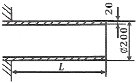
- 9.66
- 7.66
- 5.66
- 3.66
(정답률: 17%)

2. 평면응력 상태에서 σx=1750MPa, σy=350MPa, τxy=-600MPa 일 때 최대 전단응력 τmax은 약 몇 MPa인가?
- 634
- 740
- 826
- 922
(정답률: 35%)
3. 그림과 같은 볼트에 축 하중 Q가 작용할 때, 볼트 머리부의 높이 H는? (단, d:볼트 지름, 볼트 머리부에서 축 하중 방향으로의 전단응력은 볼트 축에 작용하는 인장 응력의 1/2까지 허용한다.)
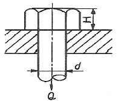
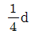
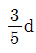
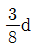
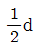
(정답률: 26%)
4. 그림과 같이 한 끝이 고정된 지름 15mm인 원형단면 축에 두 개의 토크가 작용하고 있다. 고정단에서 축에 작용하는 전단응력은 약 몇 MPa 인가?
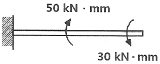
- 10
- 20
- 30
- 40
(정답률: 31%)
5. 길이가 500mm, 단면적 500mm2인 환봉이 인장하중을 받고 1.0mm 신장되었다. 봉에 저장된 탄성에너지는 약 몇 Nㆍm인가? (단, 봉의 세로탄성계수는 200GPa이다.)
- 100
- 300
- 500
- 1000
(정답률: 32%)
6. 단면의 폭과 높이가 b×h이고 길이가 L인 연강 사각형 단면의 기둔이 양단에서 핀으로 지지되어 있을 때 좌굴응력은? (단, 재료의 세로탄성계수는 E이다.)
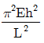
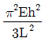
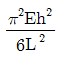
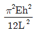
(정답률: 32%)
7. 그림과 같은 구조물의 부재 BC에 작용하는 힘은 얼마인가?
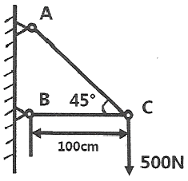
- 500N 압축
- 500N 인장
- 707N 압축
- 707N 인장
(정답률: 27%)
8. 그림과 같이 삼각형으로 분포하는 하중을 받고 있는 단순보에서 지점 A의 반력은 얼마인가?
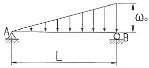
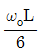
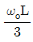
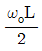
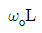
(정답률: 31%)
9. 바깥지름 d, 안지름 d/3인 중공원형 단면의 단면계수는 얼마인가?
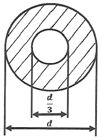
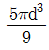
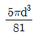
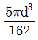
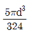
(정답률: 26%)
10. 보의 중앙부에 집중하중을 받는 일단고정, 타단지지보에서 A점의 반력은? (단, 보의 굽힘강성 EI는 일정하다.)
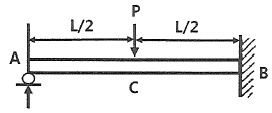
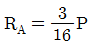
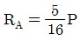
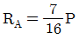
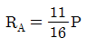
(정답률: 36%)
11. 직경 2cm의 원형 단면축을 1800rpm으로 회전시킬 때 최대 전달 마력은 약 몇 kW인가? (단, 재료의 허용전단응력은 20MPa이다.)
- 3.59
- 4.62
- 5.92
- 7.13
(정답률: 34%)
12. 길이가 L인 외팔보의 중앙에 그림과 같이 MB가 작용할때, C점에서의 처짐량은? (단, 보의 굽힘 강성 EI는 일정하고, 자중은 무시한다.)
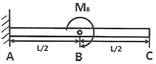
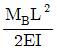
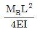
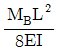
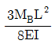
(정답률: 25%)
13. 다음과 같은 길이 4.5m의 보에 분포하중 3kN/m가 작용된다. 이 보에 작용되는 굽힘 모멘트 절대값의 최대치는 약 몇 kNㆍm인가?
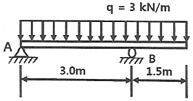
- 1.898
- 3.375
- 18.98
- 33.75
(정답률: 26%)
14. 지름이 50mm이고 길이가 200mm인 시편으로 비틀림 실험을 하여 얻은 결과, 토크 30.6Nㆍm에서 전 비틀림 각이 7°로 기록되었다. 이 재료의 전단 탄성계수는 약 몇 MPa인가?
- 81.6
- 40.6
- 66.6
- 97.6
(정답률: 30%)
15. 그림과 같이 정사각형 단면은 갖는 외팔보에 작용하는 최대 굽힘응력은?
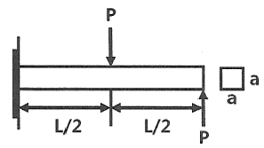
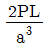
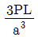
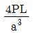
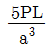
(정답률: 36%)
16. 다음과 같은 균일 단면보가 순수 굽힘 작용을 받을 때 이 보에 저장된 탄성 변형에너지는? (단, 굽힙감성 EI는 일정하다.)
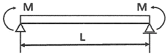
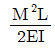
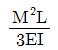
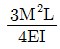
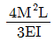
(정답률: 19%)
17. 그림과 같이 노치가 있는 원형 단면 봉이 인장력 P=9.5kN을 받고 있다. 노치의 응력 집중계수가 a=2.5라면, 노치부에서 발생하는 최대응력은 약 몇 MPa인가? (단, 그림의 단위는 mm이다.)
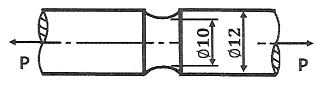
- 3024
- 302
- 221
- 51
(정답률: 30%)
18. 길이ℓ인 막대의 일단에 축방향 하중 P가 작용하여 인장 응력이 발생하고 있는 재료의 세로탄성계수는? (단, A는 막대의 단면적, δ는 신장량이다.)
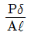
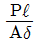
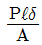
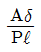
(정답률: 35%)
19. 그림과 같은 하중을 받는 단면봉의 최대 인장응력은 약 몇 MPa인가? (단, 한 변의 길이가 10cm인 정사각형이다.)
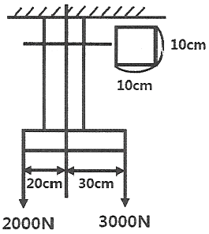
- 2.3
- 3.1
- 3.5
- 4.1
(정답률: 18%)
20. 선형 탄성 재질의 정사각형 단면봉에 500kN의 압축력이 작용할 때 80MPa의 압축응력이 생기도록 하려면 한 변의 길이를 약 몇 cm로 해야 하는가?
- 3.9
- 5.9
- 7.9
- 9.9
(정답률: 34%)
2과목: 기계열역학
21. 체적이 1m3인 용기에 물이 5kg 들어 있으며 그 압력을 측정해보니 500kPa이었다. 이 용기에 있는 물 중에 증기량(kg)은 얼마인가? (단, 500kPa에서 포화액체와 포화증기의 비체적은 각각 0.001093m3/kg, 0.37489m3/kg이다.)
- 0.0⑤
- 0.94
- 1.87
- 2.66
(정답률: 26%)
22. 5kg의 산소가 정압하에서 체적이 0.2m3에서 0.6m3로 증가했다. 이 때의 엔트로피의 변화량(kJ/K)은 얼마인가? (단, 산소는 이상기체이며, 정압비열은 0.92kJ/kgㆍK이다.)
- 1.857
- 2.746
- 5.⑤4
- 6.507
(정답률: 32%)
23. 증기가 디퓨저를 통하여 0.1MPa, 150℃, 200m/s의 속도로 유입되어 출구에서 50m/s의 속도로 빠져나간다. 이 때 외부로 방열된 열량이 500J/kg일 때 출구 엔탈피(kJ/kg)는 얼마인가? (단, 입구의 0.1MPa, 150℃ 상태에서 엔탈피는 2776.4kJ/kg이다.)
- 2751.3
- 2778.2
- 2794.7
- 2812.4
(정답률: 23%)
24. 그림과 같이 다수의 추를 올려놓은 피스톤이 끼워져 있는 실린더에 들어있는 가스를 계로 생각한다. 초기 압력이 300kPa이고, 초기체적은 0.⑤m3이다. 피스톤을 고정하여 체적을 일정하게 유지하면서 압력이 200kPa로 떨어질때까지 계에서 열을 제거한다. 이 때 계가 외부에 한 일(kJ)은 얼마인가?
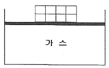
- 0
- 5
- 10
- 15
(정답률: 13%)
25. 표준대기압 상태에서 물 1kg이 100℃로부터 전부 증기로 변하는 데 필요한 열량이 0.652kJ이다. 이 증발과정에서의 엔트로피 증가량(J/K)은 얼마인가?
- 1.75
- 2.75
- 3.75
- 4.00
(정답률: 27%)
26. 체적이 0.5m3인 탱크에, 분자량이 24kg/kmol인 이상기체 10kg이 들어있다. 이 기체의 온도가 25℃일 때 압력(kPa)은 얼마인가? (단, 일반기체상수는 8.3143kJ/kmolㆍK이다.)
- 126
- 845
- 2066
- 49578
(정답률: 29%)
27. 질량 4kg의 액체를 15℃에서 100℃까지 가열하기 위해 714kJ의 열을 공급하였다면 액체의 비열(kJ/kgㆍK)은 얼마인가?
- 1.1
- 2.1
- 3.1
- 4.1
(정답률: 33%)
28. 배기량(displacement volume)이 1200cc, 극간체적(clearance volume)이 200cc인 가솔린 기관의 압축비는 얼마인가?
- 5
- 6
- 7
- 8
(정답률: 25%)
29. 열역학적 상태량은 일반적으로 강도성 상태량과 용량성 상태량으로 분류할 수 있다. 강도성 상태량에 속하지 않는 것은?
- 압력
- 온도
- 밀도
- 체적
(정답률: 31%)
30. 두께 10mm, 열전도율 15W/mㆍ℃인 금속판 두 면의 온도가 각각 70℃와 50℃일 떄 전열면 1m2당 1분 동안에 전달되는 열량(kJ)은 얼마인가?
- 1800
- 14000
- 92000
- 162000
(정답률: 29%)
31. 공기 3kg이 300K에서 650K까지 온도가 올라갈 때 엔트로피 변화량(J/K)은 얼마인가? (단, 이 때 압력은 100kPa에서 550kPa로 상승하고, 공기의 정압비열은 1.0⑤kJ/kgㆍK, 기체상수는 0.287kJ/kgㆍK이다.)
- 712
- 863
- 924
- 966
(정답률: 27%)
32. 압축비가 18인 오토사이클의 효율(%)은? (단, 기체의 비열비는 1.41이다.)
- 65.7
- 69.4
- 71.3
- 74.6
(정답률: 32%)
33. 공기 표준 브레이튼(Brayton) 사이클 기관에서 최고 압력이 500kPa, 최저압력은 100kPa이다. 비열비(k)가 1.4일 때, 이 사이클의 열효율(%)은?
- 3.9
- 18.9
- 36.9
- 26.9
(정답률: 30%)
34. 800kPa, 350℃의 수증기를 200kPa로 교축한다. 이 과정에 대하여 운동 에너지의 변화를 무시할 수 있다고 할 때 이 수증기의 Joule-Thomson 계수(K/kPa)는 얼마인가? (단, 교축 후의 온도는 344℃이다.)
- 0.0⑤
- 0.01
- 0.02
- 0.03
(정답률: 22%)
35. 최고온도(TH)와 최저온도(TL)가 모두 동일한 이상적인 가역사이클 중 효율이 다른 하나는? (단, 사이클 작동에 사용되는 가스(기체)는 모두 동일하다.)
- 카르노 사이클
- 브레이튼 사이클
- 스털링 사이클
- 에릭슨 사이클
(정답률: 13%)
36. 이상적인 카르노 사이클 열기관에서 사이클당 585.5J의 일을 얻기 위하여 필요로 하는 열량이 1kJ이다. 저열원의 온도가 15℃라면 고열원의 온도(℃)는 얼마인가?
- 422
- 595
- 695
- 722
(정답률: 25%)
37. 다음 냉동 사이클에서 열역학 제1법칙과 제2법칙을 모두 만족하는 Q1, Q2, W는?
- Q1=20kJ, Q2=20kJ, W=20kJ
- Q1=20kJ, Q2=30kJ, W=20kJ
- Q1=20kJ, Q2=20kJ, W=10kJ
- Q1=20kJ, Q2=15kJ, W=5kJ
(정답률: 25%)
38. 냉동효과가 70kW인 냉동기의 방열기 온도가 20℃, 흡열기 온도가 -10℃이다. 이 냉동기를 운전하는데 필요한 압축기의 이론 동력(kW)은 얼마인가?
- 6.02
- 6.98
- 7.98
- 8.99
(정답률: 26%)
39. 냉동기 팽창밸브 장치에서 교축과정을 일반적으로 어떤 과정이라고 하는가? (단, 이 때 일반적으로 운동에너지 차이를 무시한다.)
- 정압과정
- 등엔탈피 과정
- 등엔트로피 과정
- 등온과정
(정답률: 25%)
40. 국소대기압력이 0.099MPa일 때 용기 내 기체의 게이지 압력이 1MPa이었다. 기체의 절대압력(MPa)은 얼마인가?
- 0.901
- 1.099
- 1.135
- 1.275
(정답률: 34%)
3과목: 기계유체역학
41. 다음 중 유체의 중량(weight)당 가지는 에너지(energy)와 같은 차원을 갖는 것을 모두 고른 것은? (단, P는 압력, ρ는 밀도, v는 속도, z는 높이를 나타낸다.)
- ㉠
- ㉢
- ㉠, ㉡
- ㉡, ㉢
(정답률: 13%)
42. 깊이가 10cm이고 지름이 6cm인 물 컵에 물이 바닥으로부터 일정 높이만큼 담겨있다. 이 컵을 회전반 위의 중심축에 올려놓고 서서히 각속도를 올리면서 회전한 결과 40rad/s의 각속도가 되었을 때 물이 막 넘치게 된다면 초기에 물은 바닥으로부터 몇 cm 높이까지 담겨 있었는가?
- 6.33
- 5.46
- 4.75
- 7.84
(정답률: 20%)
43. (x,y)평면에서 다음과 같은 속도 포텐셜 함수가 2차원 포텐셜 유동이 되려면 상수 A, B, C, D, E가 만족시켜야 하는 조건은?
- A = B= 0
- D = 0
- C + E = 0
- 2C + D + 2E = 상수(constant)
(정답률: 12%)
44. 점성계수가 0.01kg/mㆍs인 유체가 지면과 수평으로 놓인 평판 위를 흐른다. 평판 위의 속도분포가 u=2.5-10(0.5-y)2일 떄 평판면에서의 전단응력은 약 몇 Pa인가? (단, y[m]는 평판면에서 수직방향으로의 거리이고, u[m/s]는 평판과 평행한 방향의 속도이다.)
- 0.1
- 0.5
- 1
- 5
(정답률: 28%)
45. 지름이 0.5m인 원형 교통표지판이 그림과 같이 1.5m 지지대에 부착되어 있다. 평균속력 20m/s의 강풍이 불 때, 교통표지판에 의해 발생하는 최대 모멘트는 약 몇 Nㆍm인가? (단, 원판의 항력계수는 1.17이고 공기의 밀도는 1.2kg/m3이다. 지지대에 의한 항력은 무시한다.)
- 55
- 83
- 96
- 128
(정답률: 22%)
46. 어떤 2차원 유동장 내에서 속도 벡터는 다음과 같을 때 점 (1,1)을 지나는 유선의 방정식은?
- y=x
- y=x2
(정답률: 23%)
47. 공기의 유속을 측정하기 위하여 피토관을 사용했다. 피토관 내에 물을 담은 U자관 수주의 높이 차가 2.5cm라면 공기의 유속은 약 몇 m/s 인가? (단, 공기의 밀도는 1.25kg/m3이다.)
- 9.8
- 19.8
- 29.6
- 39.6
(정답률: 28%)
48. 모세관을 이용한 점도계에서 원형관 내의 유동은 비압축성 뉴턴 유체의 층류유동으로 가정할 수 있다. 여기에 두 모세관이 있는데 큰 모세관 지름은 작은 모세관 지름의 2배이고 길이는 동일하다. 두 모세관의 입구측과 출구 측의 압력차가 동일할 때 큰 모세관에서의 유량은 작은 모세관 유량의 약 몇 배인가? (단, 두 모세관에서 흐르는 유체는 동일하다.)
- 2배
- 4배
- 8배
- 16배
(정답률: 18%)
49. 폭 a, 높이 b인 직사각형 수문이 수직으로 물속에 서 있다. 수문의 도심이 수면에서 h의 깊이에 있을 때 힘의 작용점의 위치는 수면 아래 어디에 위치하겠는가?
(정답률: 31%)
50. 밀도가 800kg/m3인 원통형 물체가 그림과 같이 1/3이 수면 위에 떠있는 것으로 관측되었다. 이 액체의 비중은 약 얼마인가?
- 0.2
- 0.67
- 1.2
- 1.5
(정답률: 29%)
51. 물리량과 차원이 바르게 연결된 것은? (단, M:질량, L:길이, T:시간)
- 동력 : ML2T-3
- 점성계수 : ML-2T
- 에너지 : ML2T-1
- 압력 : ML-2T-1
(정답률: 28%)
52. 안지름이 100mm인 파이프에 비중 0.8인 기름이 평균속도 4m/s로 흐를 때 질량유량은 몇 kg/s인가?
- 2.56
- 4.25
- 25.1
- 44.8
(정답률: 29%)
53. 어떤 잠수정이 시속 12km의 속도로 잠항하는 상태를 관찰하기 위하여 실물의 1/10 길이의 모형을 만들어 같은 바닷물을 넣은 탱크 안에서 실험하려고 한다. 모형의 속도는 몇 km/h로 움직여야 상사법칙이 성립하는가?
- 1.2
- 20
- 100
- 120
(정답률: 28%)
54. 그림과 같은 U자관 액주계에서 두 지점의 압력차 Px-Py는? (단, γ1, γ2, γ3는 액체의 비중량이다.)
- Px-Py=γ2L2+γ3h-γ1L1
- Px-Py=γ2L2-γ3h+γ1L1
- Px-Py=γ1L1-γ2L2+γ3h
- Px-Py=γ1L1+γ2L2+γ3h
(정답률: 30%)
55. 노즐에서 분사된 물이 고정된 평판에 수직으로 충돌하고 있다. 물제트의 지름은 20mm이고 유속이 30m/s일 때 평판이 물제트로부터 받는 힘은 약 몇 N인가?
- 283
- 372
- 435
- 527
(정답률: 27%)
56. 평판 위를 지나는 경계층 유동에서 레이놀즈 수는? (단, v는 동점성계수, u∞는 자유흐름 속도, μ는 점성계수, x는 평판 선단으로부터의 거리, ρ는 밀도이다.)
(정답률: 29%)
57. 다음 중 관성력과 중력의 상대적 크기에 의해 정해지는 무차원수는?
- Froude 수
- Euler 수
- Weber 수
- Mach 수
(정답률: 30%)
58. 20℃의 물이 지면에 대해 30° 경사진 파이프의 A지점에서 파이프 방향으로 30m 떨어진 B지점으로 흘러내린다. 파이프 안지름은 200mm이며 A와 B 지점에서 압력이 같도록 유량을 조절할 대 A와 B 사이에서 발생하는 손실수두(m)는 약 얼마인가?
- 0
- 15
- 25.9
- 30
(정답률: 21%)
59. 파이프 유동의 해석에 있어서 완전난류영역에서의 관마찰계수 f에 대한 설명으로 가장 옳은 것은?
- 레이놀즈수만의 함수가 된다.
- 상대조도와 오일러수의 함수가 된다.
- 마하수와 코우시수의 함수가 된다.
- 상대조도만의 함수가 된다.
(정답률: 25%)
60. 물이 30m/s의 속도로 수직 방향 위로 분출되고 있다. 이 때 물의 최고 도달 높이는 약 몇 m 인가?
- 11.5
- 22.9
- 45.9
- 91.7
(정답률: 30%)
4과목: 유체기계 및 유압기기
61. 원심펌프의 특성 곡선(characteristic curve)에 대한 설명 중 틀린 것은?
- 유량이 최대일 때의 양정을 체절양정(shut off head)이라 한다.
- 유량에 대하여 전양정, 효율, 축동력에 대한 관계를 알 수 있다.
- 효율이 최대일 때를 설계점으로 설정하여 이떄의 양정을 규정양정(normal head)이라 한다.
- 유량과 양정의 관계곡선에서 서징(surging)현상을 고려할 때 왼편하강 특성곡선 구간에서 운전하는 것은 피하는 것이 좋다.
(정답률: 45%)
62. 다음 중 사류수차에 대한 설명으로 틀린 것은?
- 프란시스 수차와 프로펠러 수차 사이의 비속도와 유효낙차를 가진다.
- 비교적 유량이 많은 댐식에 주로 사용된다.
- 프란시스 수차와는 다르게 흡출관이 없다.
- 러너 베인의 기울어진 각도는 고낙차용은 축방향과 45°정도이고, 저낙차용은 60°정도이다.
(정답률: 45%)
63. 다음 수력기계에서 특수형 펌프에 속하지 않는 것은?
- 진공 펌프
- 재생 펌프
- 분사 펌프
- 수격 펌프
(정답률: 35%)
64. 수차에 대하여 일반적으로 운전하는 비속도가 작은 것으로부터 큰 순으로 바르게 나타낸 것은?
- 프로펠러 수차＜프란시스 수차＜펠톤 수차
- 프로펠러 수차＜펠톤 수차＜프란시스 수차
- 프란시스 수차＜펠톤 수차＜프로펠러 수차
- 펠톤 수차＜프란시스 수차＜프로펠러 수차
(정답률: 47%)
65. 일반적인 토크 컨버터의 최고 효율은 약 몇 % 수준인가?
- 97
- 90
- 83
- 75
(정답률: 44%)
66. 유회전식 진공 펌프(oil rotary vacuum pump)에 해당하지 않는 것은?
- 엘모형(Elmo type)
- 센코형(Cenco type)
- 게데형(Gaede type)
- 키니형(Kinney type)
(정답률: 44%)
67. 펌프보다 낮은 수위에서 액체를 퍼 올릴 때 풋 밸브(foot valve)를 설치하는 이유로 가장 옳은 것은?
- 관내 수격작용을 방지하기 위하여
- 펌프의 한계 유량을 넘지 않도록 하기 위해
- 펌프 내에 공동현상을 방지하기 위하여
- 운전이 정지되더라도 흡입관 내에 물이 역류하는 것을 방지하기 위해
(정답률: 55%)
68. 시로코 팬(sirocco fan)의 일반적인 특징에 대한 설명으로 옳지 않은 것은?
- 회전차의 깃이 회전방향으로 경사되어 있다.
- 익현 길이가 짧다.
- 풍량이 적다.
- 깃폭이 넓은 깃을 다수 부착한다.
(정답률: 32%)
69. 수차에 작용하는 물의 에너지 종류에 따라 수차를 구분하였을 때, 물레방아가 해당되는 수차의 형식은?
- 충격 수차
- 중력 수차
- 펠톤 수차
- 반동 수차
(정답률: 48%)
70. 운전 중인 급수펌프의 유량이 4m3/min, 흡입관에서의 게이지 압력이 -40kPa, 송출관에서의 게이지 압력이 400kPa이다. 흡입관경과 송출관경이 같고, 송출관의 압력 측정 장치는 흡입관의 압력 측정 장치의 설치 위치보다 30cm 높게 설치가 되어있다면, 이 펌프의 전양정(m)과 동력(kW)은 각가 얼마 정도인가?
- 27.2m, 27.3kW
- 45.2m, 45.4kW
- 27.2m, 57.3kW
- 45.2m, 29.5kW
(정답률: 36%)
71. 베인 펌프의 일반적인 특징으로 옳지 않은 것은?
- 송출 압력의 맥동이 적다.
- 고장이 적고 보수가 용이하다.
- 펌프의 유동력에 비하여 형상치수가 적다.
- 베인의 마모로 인하여 압력저하가 커진다.
(정답률: 48%)
72. 그림과 같은 도시기호로 표시된 밸브의 명칭은?
- 직접 작동형 릴리프 밸브
- 파일럿 작동형 릴리프 밸브
- 2방향 감압 밸브
- 시퀀스 밸브
(정답률: 34%)
73. 단단 베인 펌프 2개를 1개의 본체 내에 직렬로 연결시킨 베인 펌프는?
- 2중 베인 펌프(double type vane pump)
- 2단 베인 펌프(two stage vane pump)
- 복합 베인 펌프(combination vane pump)
- 가변 용량형 베인 펌프(variable delivery vane pump)
(정답률: 56%)
74. 펌프의 무부하 운전에 대한 장점이 아닌 것은?
- 작업시간 단축
- 구동동력 경감
- 유압유의 열화 방지
- 고장방지 및 펌프의 수명 연장
(정답률: 57%)
75. 슬라이드 밸브 등에서 밸브가 중립점에 있을 떄, 이미 포트가 열리고, 유체가 흐르도록 중복된 상태를 의미하는 용어는?
- 제로 랩
- 오버 랩
- 언더 랩
- 랜드 랩
(정답률: 36%)
76. 1개의 유압 실린더에서 전진 및 후진 단에 각각의 리밋 스위치를 부착하는 이유로 가장 적합한 것은?
- 실린더의 위치를 검출하여 제어에 사용하기 위하여
- 실린더 내의 온도를 제어하기 위하여
- 실린더의 속도를 제어하기 위하여
- 실린더 내의 압력을 계측하고 제어하기 위하여
(정답률: 48%)
77. 기능적으로 구분할 때 릴리프 밸브와 리듀싱 밸브는 어떤 밸브에 속하는가?
- 방향 제어 밸브
- 압력 제어 밸브
- 비례 제어 밸브
- 유량 제어 밸브
(정답률: 59%)
78. 일정한 유량(Q) 및 유속(V)으로 유체가 흐르고 있는 관의 지름 D를 5D로 크게 하면 유속은 어떻게 변화하는가?
- 25V
- 5V
(정답률: 63%)
79. 유압기기에서 실(seal)의 요구 조건과 관계가 먼 것은?
- 압축 복원성이 좋고 압축변형이 적을 것
- 체적변화가 적고 내약품성이 양호할 것
- 마찰저항이 크고 온도에 민감할 것
- 내구성 및 내마모성이 우수할 것
(정답률: 69%)
80. 그림과 같이 유체가 단면적이 다른 파이프를 통과할 때 단면적 A2지점에서의 유량은 몇 ℓ/s인가? (단, 단면적 A1에서의 유속 V1=4m/s이고, 단면적은 A1=0.2cm2이며, 연속의 법칙을 만족한다.)
- 0.008
- 0.08
- 0.8
- 8
(정답률: 56%)
5과목: 건설기계일반 및 플랜트배관
81. 무한궤도식 불도저의 트랙프레임 구성요소가 아닌 것은?
- 프런트 아이들러
- 리코일 스프링
- 블레이드
- 상부롤러
(정답률: 39%)
82. 프랜트 기계설비용 알루미늄계 재료의 특징으로 틀린 것은?
- 내식성이 양호하다.
- 열과 전기의 전도성이 나쁘다.
- 가공성, 성형성이 양호하다.
- 빛이나 열의 반사율이 높다.
(정답률: 67%)
83. 다음 중 건설기계의 규격을 설명한 것으로 틀린 것은?
- 아스팔트 피니셔 : 시공할수 있는 표준 폭[m]
- 아스팔트 믹싱 플랜트 : 혼합 용기 내에서 1회 혼합할 수 있는 탱크 용량[m3]
- 아스팔트 살포기 : 탱크 용량[m3]
- 콘크리트 살포기 : 시공할 수 있는 표준 폭[m]
(정답률: 24%)
84. 다음중 도랑파기 작업에 가장 적합한 건설기계는?
- 로더
- 굴삭기
- 지게차
- 천공기
(정답률: 64%)
85. 다음 중 전압식 롤러에 속하지 않는 것은?
- 타이어 롤러
- 머캐덤 롤러
- 탠덤 롤러
- 탬퍼
(정답률: 44%)
86. 트랙터에 고정시키는 작업장치의 용도에 대한 설명으로 틀린 것은?
- 트리밍 도저는 토공용이다.
- 레이크 도저는 뿌리를 뽑고, 개간하는데 쓰인다.
- 앵글 도저는 토사를 한쪽 방향으로 밀어낼 수 있다.
- 틸트 도저는 굳은 땅 파기 작업이 가능하다.
(정답률: 32%)
87. 피견인 스크레이퍼에서 흙의 운반량(m3/h) Q를 구하는 식으로 옳은 것은? (단, q:볼의 1회 운반량(m3), f:토량환산계수, E:스크레이퍼의 작업효율, Cm:사이클 시간(min)이다.)
(정답률: 56%)
88. 다음 중 앞쪽에서 굴착하여 로더 차체 위를 넘어서 뒤쪽에 적재할 수 있는 로더 형식은?
- 사이드 덤프 형
- 프런트 엔드 형
- 리어 덤프 형
- 오버 헤드 형
(정답률: 60%)
89. 지게차에서 하중을 실어 오르내리게 하는 유압장치로 단동 실린더로 되어 있는 것은?
- 마스터 실린더
- 틸트 실린더
- 조향 부스터
- 스티어링 실린더
(정답률: 48%)
90. 다음 중 건설기계에 쓰이는 터빈 펌프의 구조와 관계없는 것은?
- 와류실
- 임펠러
- 안내날개
- 스파크 플러그
(정답률: 64%)
91. 루프형 신축 이음재의 곡률 반경은 일반적으로 관 지름의 몇 배인가?
- 2배
- 4배
- 6배
- 8배
(정답률: 38%)
92. 관 속을 흐르는 유체의 온도와 관 벽에 접하는 외부 온도의 변화에 따른 관은 팽창, 수축을 하게 되는데 이러한 사고를 미연에 방지하기 위한 신축 이음쇠의 종류가 아닌 것은?
- 슬리브형(sleeve type) 신축 이음쇠
- 벨로스형(bellows type) 신축 이음쇠
- 루프형(loop type) 신축 이음쇠
- 슬라이드형(slide type) 신축 이음쇠
(정답률: 47%)
93. 다음 파이프 래크의 설명에서 Ⓐ, Ⓑ에 적적한 간격은?
- Ⓐ: 75mm, Ⓑ: 25mm
- Ⓐ: 25mm, Ⓑ: 25mm
- Ⓐ: 25mm, Ⓑ: 75mm
- Ⓐ: 75mm, Ⓑ: 75mm
(정답률: 35%)
94. 가스절단 시 가스절단 조건에 대한 설명 중 틀린 것은?
- 모재의 연소온도가 모재의 용융온도보다 낮아야 한다.
- 모재의 성분 중 연소를 방해하는 원소가 적어야 한다.
- 금속 산화물의 용융온도가 모재의 용융온도보다 높아야 한다.
- 금속 산화물의 유동성이 좋아야 한다.
(정답률: 45%)
95. 다음 중 배관지지 장치를 설치할 때 고려사항으로 거리가 먼 것은?
- 유체 및 피복제의 합계 중량
- 공기 및 유해가스 발생 여부
- 온도변화에 따른 관의 신축
- 외부에서의 진동과 충격
(정답률: 55%)
96. 동관 연결 부속인 90° 엘보의 접합부 기호가 C×C라 할 때 "C"에 대한 설명으로 옳은 것은?
- 이음쇠 내로 관이 들어가 접합되는 형태
- 나사가 안으로 난 나사이음용 부속의 끝부분
- 나사가 밖으로 난 나사이음용 부속의 끝부분
- 이음쇠 바깥지름이 동관의 안지름 치수에 맞게 만들어진 부속의 끝부분
(정답률: 36%)
97. 배관용 공구에 대한 설명으로 옳은 것은?
- 수직바이스의 크기는 조우의 폭으로 나타낸다.
- 손톱 날의 크기는 전체 길이로 나타낸다.
- 강관을 절단 시 사용하는 쇠톱 날의 산수는 1인치 당 14~18산이 적당하다.
- 줄의 종류는 줄 날의 크기에 따라 황목, 중목, 세목, 유목으로 나눈다.
(정답률: 40%)
98. 실린더의 직경이 500mm이고 높이가 1m일 때 실린더 내 유체질량이 200kg이면 밀도는 약 몇 kg/m3인가?
- 39.2
- 100
- 1020
- 3900
(정답률: 60%)
99. 다음 중 배관 내 기기 및 라인 점검 방법으로 거리가 먼 것은?
- 드레인 배출은 완전한지 확인한다.
- 도면과 시방서의 기준에 맞도록 설비가 되었는지 확인한다.
- 각종 기기 및 자재와 부속품은 시방서에 명시된 규격품인지 확인한다.
- 각 배관의 기울기는 급경사로 하고 에어포켓(air pocket)부는 없는지 확인한다.
(정답률: 60%)
100. 동관에 관한 일반적인 설명으로 틀린 것은?
- 두께별로 분류할 때 K, L, M 형으로 구분한다.
- 알카리성에는 내식성이 약하나, 산성에는 강하다.
- 열 및 전기의 전도율이 양호하다.
- 전연성이 풍부하고 마찰저항이 적다.
(정답률: 55%)
자유단의 처짐을 구하기 위해서는 먼저 하중을 구해야 한다. 이 원관에서 방출되는 물의 하중은 원관 내부의 물의 무게와 같다. 원관 내부의 물의 부피는 다음과 같다.
V = πr^2h = π(0.1m)^2(4m) = 0.04π m^3
따라서 물의 무게는 다음과 같다.
F = mg = ρVg = 1000kg/m^3 × 0.04π m^3 × 9.81m/s^2 ≈ 1234.8N
이 하중이 원관의 돌출 부분에 작용하므로, 이 부분에서의 단면적을 구해야 한다. 돌출 부분은 원관의 외경이 200mm이므로, 반지름은 100mm이다. 따라서 돌출 부분의 단면적은 다음과 같다.
A = πr^2 = π(0.1m)^2 ≈ 0.0314m^2
이제 이 하중과 단면적을 이용하여 처짐을 구할 수 있다. 원관의 재료는 세로탄성계수가 200GPa이므로, 탄성계수는 다음과 같다.
E = 2G(1+ν) ≈ 2 × 200GPa × (1+0.3) ≈ 520GPa
여기서 ν는 포아송비로, 대부분의 금속재료에서 0.3 정도의 값을 가진다.
원관의 길이는 충분히 길기 때문에, 이 문제에서는 자유단의 처짐을 구하기 위해 단순지지 상태의 처짐공식을 사용할 수 있다.
δ = FL^3 / 48EI
여기서 L은 돌출 부분에서 고정벽까지의 거리인 4m이다. 따라서,
δ = 1234.8N × (4m)^3 / (48 × 520GPa × 0.0314m^2) ≈ 3.66mm
따라서, 자유단의 처짐은 약 3.66mm이다. 따라서 정답은 "3.66"이다.